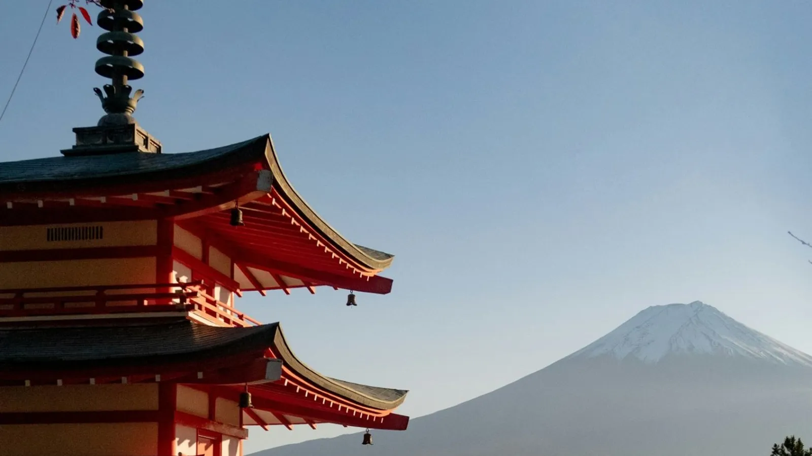

In breve
Vai a Kawaguchiko, la cittadina sul lago ai piedi della montagna. Il bus da Busta Shinjuku è il più economico (circa 1h45, circa 2.200 ¥); il treno Fuji Excursion da Shinjuku è il più comodo (circa 1h50, circa 4.130 ¥). Parti la mattina presto: il Fuji si vede più spesso prima che arrivino le nuvole.
Bus o Fuji Excursion?
| Opzione | Tempo | Prezzo a tratta | Da sapere |
|---|---|---|---|
| Bus autostradale (Busta Shinjuku) | ~1h45–2h | ~2.200 ¥ | Partenze frequenti, prenota nei periodi affollati |
| Fuji Excursion (Shinjuku) | ~1h50 | ~4.130 ¥ | Diretto, posti riservati, pochi treni al giorno |
| Tour guidato | Tutto il giorno | varia | Niente da organizzare, più tappe in pullman |
Il JR Pass copre solo il tratto JR del Fuji Excursion: l'ultimo pezzo sulla linea Fujikyu si paga a parte. Non hai tempo di organizzare? Un tour di un giorno al Fuji da Tokyo pensa lui a trasporti e tappe.
Una giornata semplice a Kawaguchiko
- 7:00–8:00 — partenza da Shinjuku in bus o treno.
- Mattina — la riva nord del lago Kawaguchi, la classica vista del Fuji sull'acqua.
- Tarda mattina — la pagoda Chureito (circa 400 gradini), la famosa cartolina della pagoda davanti alla montagna.
- Pranzo — hoto, la zuppa locale di noodle spessi.
- Pomeriggio — la funivia panoramica o una passeggiata sul lago, poi ritorno a Tokyo. Gli ultimi bus partono la sera, il treno prima.
Vedrai davvero il Fuji?
Non sempre: la montagna si nasconde spesso tra le nuvole, soprattutto d'estate. I mesi più limpidi di solito vanno dal tardo autunno all'inverno, e la mattina è meglio del pomeriggio. Controlla webcam e meteo la sera prima e, se puoi, tieni una data flessibile.
Gita di un giorno o una notte?
Se il Fuji è uno dei momenti forti del viaggio, dormi una notte sul lago: vedi l'alba e hai una seconda possibilità se il primo giorno è nuvoloso. Molti ryokan hanno onsen con vista sulla montagna: confronta gli hotel a Kawaguchiko.
Consigli
- Prenota il bus o i posti riservati del treno qualche giorno prima per weekend e festivi.
- Prosegui per Kyoto? Puoi farlo il giorno dopo: vedi Da Tokyo a Kyoto e l'itinerario Tokyo–Kyoto–Osaka in 7 giorni.
- Porta qualcosa di caldo: sul lago fa molto più freddo che a Tokyo.
Orari e prezzi sono indicativi e possono cambiare: controlla sempre prima di partire.
Verificato sulle fonti ufficiali. Regole e prezzi cambiano: controlla sempre su questi siti prima di partire.
Organizza la gita al Fuji
Alcuni link sono affiliati: se prenoti tramite loro non paghi nulla in più e aiuti 687 a restare gratuito.
La giornata al Fuji, costruita sul meteo.
In 687 Japan la scheda Prevent mostra il meteo ora per ora sul lago, e NOW sposta le tappe se le nuvole nascondono la montagna o il bus è pieno.